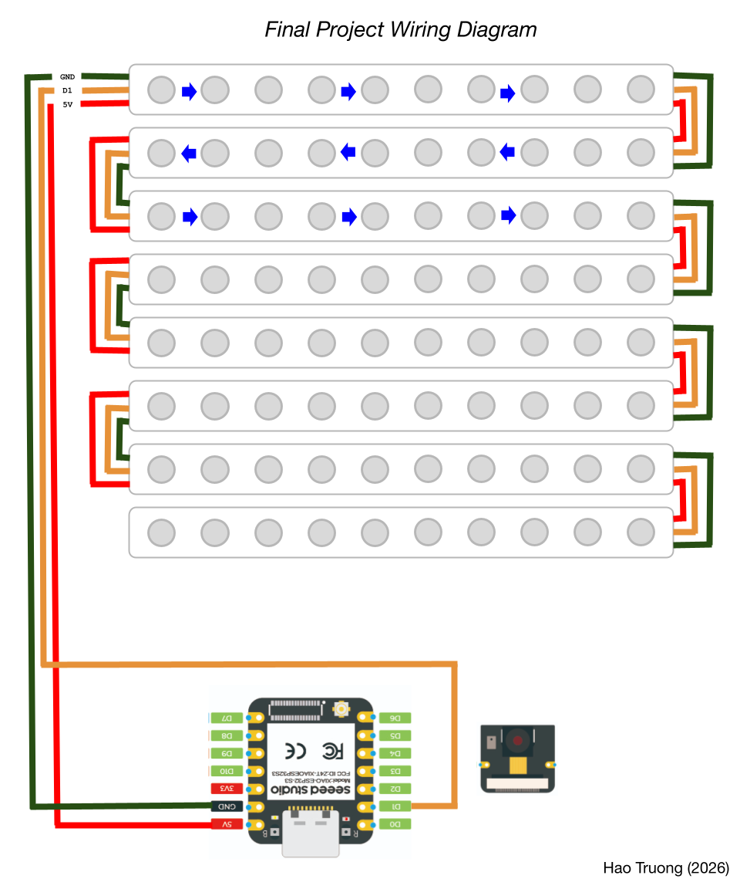
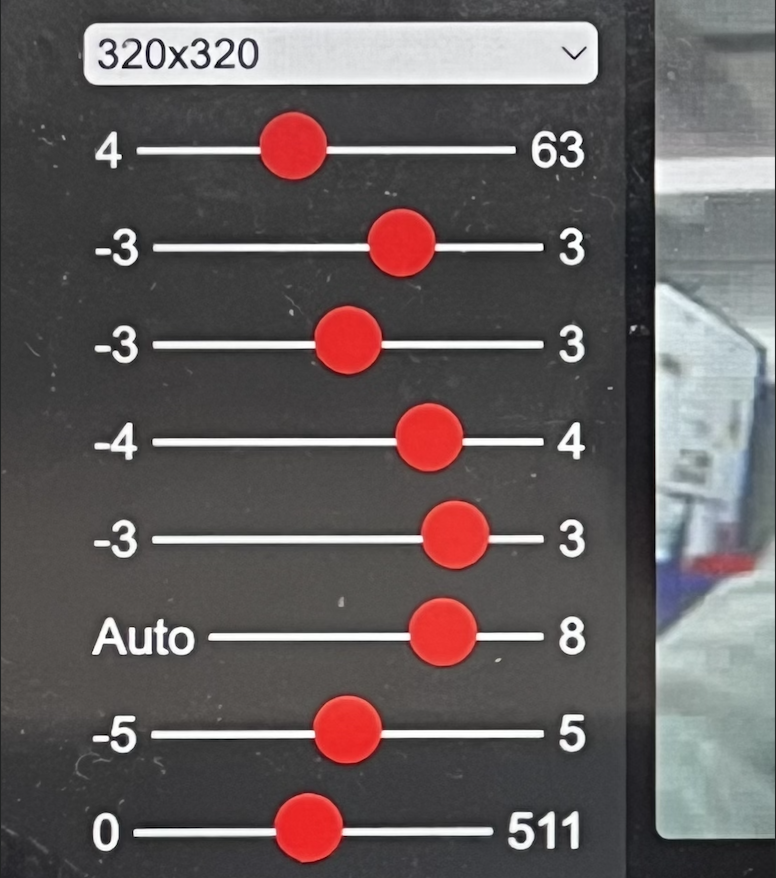
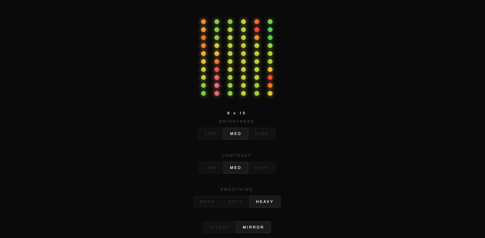
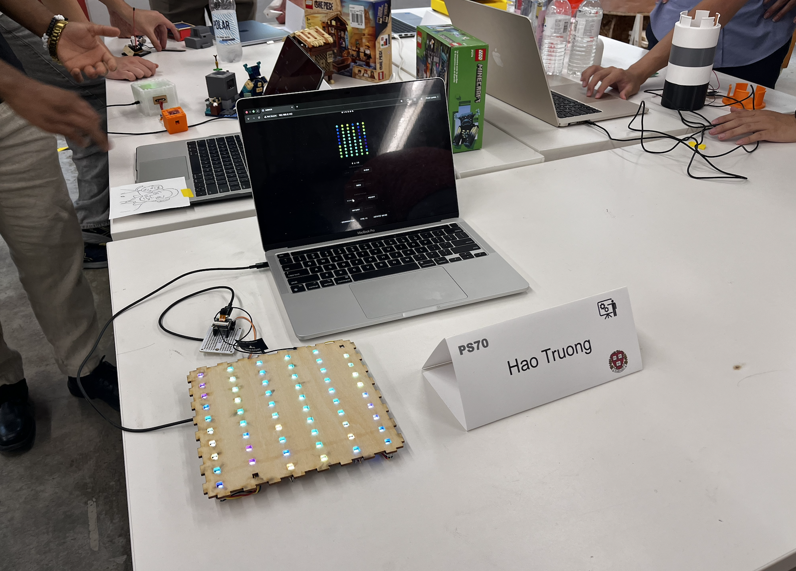
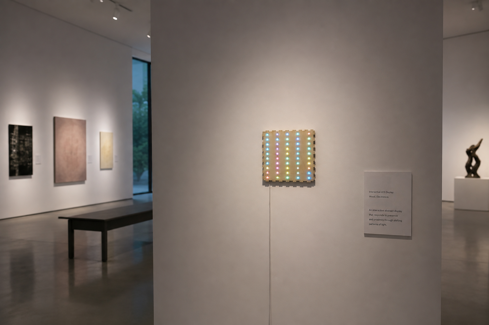

For my final project, I decided to combine the concepts I learned from the whole course such as CAD design, electricity, and sensors to create a abstract art piece. I was inspired by interactive and live art that is able to move dynamically and allow the audience to have a diverse perspective on how they view it. Based on this idea, I thought of making a LED display, similar to how screens work, have an RGB image of what the sensor or camera is capturing live. The final product was a 10x8 LED screen that is connected to a Xiao ESP32S3 Camera where captures display in real time as the input and feeds into the LED display by summarizing both pixels and colors through my program and outputs the changes on the screen.
This video captures an early protoype of my product. The camera takes in distance and large movements and displays it with only solid white light on the LED. For this prototype, I could have also used an ultrasonic sensor because it could also use distance as the main input however I believe the camera worked better because it had more complexity and worked a lot smoohter from my experience. Additionally, the camera allowed for more customizability potential which can seen reflected in the final proudct.

Wiring Diagram
I used the serpentine wiring method for my LED light because I believe it is the most efficient way to conduct the 5V through one wire from the Xiao and also only have one output from D1 on the Xiao to control the LEDs. However, this way made the organizing the LEDs in the program a bit more complicated and the soldering took extra steps but overall, this method works better for my LED display because it allows easier management.

Camera Settings Variations
| Component | Quantity |
|---|---|
| Xiao ESP32S3 Sense | 1 |
| Xiao 2.4GHZ Antenna | 1 |
| OV2640 Camera Sensor | 1 |
| LEDs | 80 |
| Breadboard | 1 |
| 12" x 12" Plywood 6mm | 1 |

A screenshot of my website UI for adjusting and personalizing the light display. It includes the option to change brightness, contrast, smoothness, and live data on the LEDs.

Product Presentation
Short Demonstration

Product in Museum (Image credits: ChatGPT)
Moving forward, I plan to enclose the light display into a 3D Canvas and clean up the wiring. I also plan to adjust the code in order for the camera to be more sensitive to movement inputs and able to more accuratly capture the live image onto the display. I can enclose the display by adding the sides plates to hide the wiring and possibly make a 3D printed case for the small camera to attach to the top of the case.